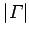

Inhalt Index DeskTop Bronstein

 Funktionentheorie Funktionen einer komplexen Veränderlichen Konforme Abbildung Komplexe Potentiale
Funktionentheorie Funktionen einer komplexen Veränderlichen Konforme Abbildung Komplexe Potentiale


Wenn  die Intensität eines Wirbels für reelles  ist, dessen Zentrum sich im Punkt z0 befindet, gilt:
ist, dessen Zentrum sich im Punkt z0 befindet, gilt:
Im Vergleich zur Darstellung des Potentials für Quelle und Senke in der linken Abbildung, sind die Rollen von Feld- und Potentiallinien vertauscht (rechte Abbildung).
Für komplexes  ergibt (14.29) das Potential einer Wirbelquelle, deren Feld- und Potentiallinien je eine Spiralenschar liefern, die zueinander orthogonal verlaufen (s. rechte Abbildung).
ergibt (14.29) das Potential einer Wirbelquelle, deren Feld- und Potentiallinien je eine Spiralenschar liefern, die zueinander orthogonal verlaufen (s. rechte Abbildung).